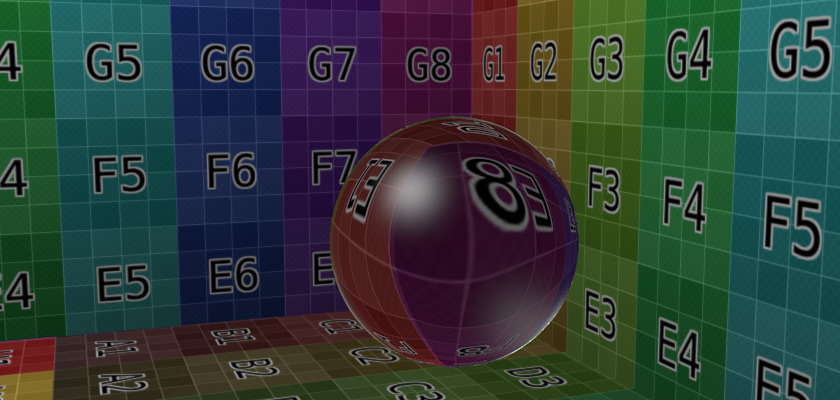

Прозорість -- Transparency¶
Орієнтир -- Reference
| Mode: | All Modes |
|---|---|
| Panel: |
Матеріали у Blender'і можуть бути установлені як прозорі, щоб світло могло проходити крізь будь-які об'єкти за допомогою такого матеріалу. Прозорість керується за допомогою «альфа» каналу, де кожен піксель має додаткове значення у діапазоні 0-1, додатково до значень його кольорів RGB. Якщо альфа=0, то цей піксель вважається прозором, а значення RGB для поверхні нічого не привносять у вигляд пікселя; для альфа=1, поверхня є повністю безпрозорою, а її колір визначає фінальний колір такого пікселя.

Transparency panel.
In Blender, there are three ways in which the transparency of a material can be set: Mask, Z-Buffer and Raytrace. Each of these is explained in more detail below. The Material Preview option with a sphere object gives a good demonstration of the capabilities of these three options.
Загальні опції¶
Наступні контролери властивостей доступні для усіх опцій прозорості:
- Альфа -- Alpha
- Задає прозорість матеріалу, установлюючи для усіх пікселів в альфа каналі задане значення.
- Френель -- Fresnel
- Задає силу ефекту Френеля. Ефект Френеля керує тим, наскільки прозорим є матеріал залежно від кута між нормаллю поверхні та напрямком огляду. Типово, чим більше цей кут, тим більш безпрозорим стає матеріал (це зазвичай відбувається на контурі об'єкта).
- Блікування -- Specular
- Керує альфа/спадом для блікового кольору.
- Змішання -- Blend
- Керує змішуванням між прозорими та не-прозорими областями. Використовується тільки, якщо значення Fresnel більше за 0.
Маска -- Mask¶
Ця опція просто маскує фон. Вона використовує альфа канал для змішування кольору кожного пікселя на активному об'єкті з кольором відповідного фонового пікселя, згідно з альфа каналом цього пікселя. Звідси, для альфа = 1, колір об'єкта видимий -- цей об'єкт повністю безпрозорий; але якщо альфа = 0, то видимий тільки фон -- об'єкт є прозорим (але, зауважте, що будь-який інших об'єкт, що знаходиться позаду активного об'єкта, зникає).
This is useful for making textures of solid or semitransparent objects from photographic reference material, i.e. a mask is made with alpha opaque for pixels within the object, and transparent for pixels outside the object.
Xem thêm
Z-Buffer¶
Це використовує буфер альфа для прозорих граней. Значення альфа для кожного пікселя визначає суміш базового кольору матеріалу, а колір пікселя визначається з об'єктів/фону позаду нього. Для цієї опції доступні тільки базові устави; вона не обчислює заломлення, рефракції.
Ray-Traced Transparency¶
Використовує простеження променів для обчислення заломлень, рефракцій. Простеження променя дозволяє мати складні рефракції, спад та розмиття, а також використовується для імітування заломлення променів світла через прозорий матеріал, як через лінзу.
Ghi chú
Опція «Простеження променя» -- Raytrace доступна тільки для рушіїв зобража, рендера Blender Render та Cycles, але не для ігрового рушія Game Engine.
Промінь посилається від камери та проходить крізь сцену, допоки він не зустріне об'єкт. Якщо перший об'єкт, на який натрапить промінь, є не-прозорим, то промінь бере колір цього об'єкта.
Якщо такий об'єкт є прозорим, то промінь продовжує свій шлях до наступного об'єкта і так далі, допоки він зрештою не зустріне не-прозорий об'єкт, який задає колір для всього ланцюга променів. Зрештою, перший прозорий об'єкт успадковує кольори його фону, пропорційно до його значення Alpha (і значення Альфа кожного прозорого матеріалу по дорозі до нього).
Але, хоча промінь проходить крізь прозорий об'єкт, він може бути відхилений від свого курсу відповідно до Показника Заломлення -- Index of Refraction (IOR) матеріалу. Коли ви фактично дивитися крізь поверхню скляної сфери, то ви помітите, що фон перевернутий та спотворений: це все через Показник Заломлення скла.
Ghi chú
Enable Ray Tracing
Для отримання промінь-простеженої прозорості вам необхідно:
- Увімкнути простеження променя у ваших уставах зображування, рендерингу. Це робиться на панелі «Зображ > Відтінення» -- . Простеження променя стандартно увімкнене.
- Задати значення Альфа, якесь інше, ніж 1.0.
- Щоб матеріал фону приймав світло, що проходить крізь ваш прозорий об'єкт, повинна бути увімкнена опція «Приймати Прозоре» -- Receive Transparent для цього матеріалу на панелі «Матеріал > Тінь» -- .
Опції¶

The Transparency panel.
Окрім загальних опцій, зазначених вище, доступні наступні контролери для цієї властивості:
- Показник Заломлення -- IOR
- Показник заломлення світла -- Index of Refraction. Задає, наскільки промінь, що проходить крізь матеріал, буде заломленим, а звідси продукувати спотворене зображення його фону. Дивіться IOR values for Common Materials нижче.
- Фільтр -- Filter
- Величина фільтрування для промінь-простеженої прозорості. Чим вище це значення, тим більше буде показаний базовий колір матеріалу. Цей матеріал все ще буде прозорим, але він почне брати колір матеріалу. Стандартно вимкнено (0.0).
- Спад -- Falloff
- Наскільки швидко світло поглинається при його проходженні крізь матеріал. Дає «глибину» та «товщину» скла.
- Ліміт -- Limit
- Матеріали, товстіші за це значення, є не прозорими. Це використовується для керування порогом, після якого починається фільтрування кольору.
- Глибина -- Depth
- Задає максимальну кількість прозорих поверхонь, крізь які може пройти одиничний промінь. Тут немає жодних типових значень. Прозорі об'єкти поза діапазоном Depth будуть зображуватися, рендеритися чорними при огляді крізь прозорий об'єкт, для якого задано Depth. Іншими словами, якщо ви помітите чорні області на поверхні прозорого об'єкта, то рішенням цього може бути збільшення значення Depth для нього (це поширена проблема з промінь-простеженими прозорими об'єктами). Вам можливо також необхідно буде увімкнути прозорі тіні на фоновому об'єкті.
- Глянець -- Gloss
Устави для глянсуватості матеріалу.
- Величина -- Amount
- Чистота рефракції, заломлення. Задання цього меншим, ніж одиницю, дає розмите заломлення.
- Поріг -- Threshold
- Поріг для адаптивного відбору. Якщо відбір включає менше проб, ніж ця величина (у відсотках), то він зупиняється.
- Вибірки -- Samples
- Кількість конусних вибірок, усереднена для розмитого заломлення.
Приклади¶
Показник заломлення світла¶

Influence of the IOR of an Object on the distortion of the background.
There are different values for typical materials: Air: 1.000 (no refraction), Alcohol: 1.329, Glass: 1.517, Plastic: 1.460, Water: 1.333 and Diamond: 2.417.
Френель -- Fresnel¶

З промінь-простеженою прозорістю. |

З альфа буферованою прозорістю. |

Устави для ефекту Френеля при використанні промінь-простеженої прозорості. |

Устави для ефекту Френеля при використанні прозорості Z. |
Ghi chú
Блікова підсвітка скла є на плитці F4 ілюстрації вище (яка середньо розвернута між світлом та камерою); ефект Френеля можна побачити у ряді С та стовпці 6 цієї ж ілюстрації, де грані розвернуті від камери.
Величина ефекту Френеля може керуватися збільшенням значення Blend або зменшенням значення Alpha.
Глибина -- Depth¶
Проста сцена з трьома стаканами на поверхні та трьома лампами. Depth було задано як 4, 8, 12, та 14, що дало у результаті час зображування, рендерингу як 24 сек, 34 сек, 6 хвл та 11 хвл відповідно. (Download blend-file).
Збільшення Depth також значно збільшує час на рендеринг, зображування. Кожен раз, як промінь світла проходить крізь поверхню, алгоритм простеження променя викликається рекурсивно. У прикладі вищі кожен бік кожного стакана має зовнішню та внутрішню поверхню. Промені світла, звідси, мають проходити крізь чотири поверхні для кожного стакана.
Але не тільки це, у кожній точці поверхні деяке світло може бути відбите або віддзеркалене від поверхні у різних напрямках. Це призводить до необхідності обчислення одночасно кількох променів для кожної точки (що часто називають «деревом променів» -- tree of rays). У кожному рендереному зображенні вище є 640×400=256 000 пікселів. При збільшенні Depth принаймні одне дерево променів додається для кожного пікселя.
Будьте поблажливі до свого комп'ютера. Бережне розміщення об'єктів у сцені для запобігання перекриттю прозорих об'єктів -- це часто цікава альтернатива.
Поради¶
Прозорі Тіні¶

Без прозорих тіней. |

Без прозорих тіней, увімкнене освітлення середовища. |

Увімкнені прозорі тіні, альфа задано як 0.0. |

Як і попереднє, альфа задано як 0.25. |

Прозорі тіні із загородою оточення, задані через множення, відстань 1 (радіус сфери). |

Як і попереднє, відстань збільшено до 2 (діаметр сфери). |
{kind=link}
Стандартно, тіні прозорих об'єктів зображуються, рендеряться суцільно чорними, ніби такий об'єкт і не був прозорим взагалі. Але у реальності, чим прозоріший об'єкт, тим світліша тінь від нього.
In Blender, transparent shadows are set on the materials that receive the shadows from the transparent object. This is enabled and disabled with the Receive Transparent button, in the panel. The shadow's brightness is dependent on the Alpha value of the shadow-casting material.
Альтернативи прозорим промінь-простеженим тіням можна знайти у вкладці «Світ» -- World на панелях Ambient Occlusion, Environment Lighting та Gather. Альтернативно, може використовуватися текстура для керування значенням Intensity матеріалу, що приймає тіні.
Значення Показника Заломлення для поширених матеріалів¶
Наступний список надає деякі значення показника заломлення для використання, коли промінь-простежена прозорість вживається для різних рідин, твердих тіл (коштовностей) та газів:
Гази -- Gases¶
|
|
|
Поширені рідини -- Common Liquids¶
|
|
|
Поширені прозорі матеріали -- Common Transparent Materials¶
|
|
|
Поширені безпрозорі матеріали -- Common Opaque Materials¶
|
|
|
Дорогоцінні камені -- Gemstones¶
|
|
|
Метали -- Metals¶
|
|
|